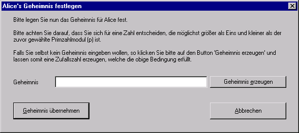

Dieser Dialog erscheint, wenn Sie aus der Diffie-Hellman-Demo heraus eine der beiden Schaltfläche Geheimnis klicken.
Der Dialog ermöglicht Ihnen die Wahl der Geheimnisse für Alice und Bob.

Beachten Sie, dass die Geheimnisse für Alice und Bob getrennt voneinander gewählt werden, d.h. Sie müssen die Geheimnisse für Alice und Bob durch den Aufruf separater Dialoge festlegen.
Dies soll den Umstand verdeutlichen, dass in der Praxis niemand - weder Alice noch Bob - sein Geheimnis öffentlich bekannt geben darf: Nicht einmal die Partei, mit der man kooperiert, darf den eigenen geheimen Schlüssel erfahren, da die Kommunikation auf einem unsicheren Kanal stattfindet, der jederzeit abgehört werden könnte.
Das Geheimnis ist eine beliebige natürliche Zahl, die kleiner als der Primzahlmodul p sein sollte, der zuvor als Bestandteil der öffentlichen Parameter festgelegt wurde. Zu beachten ist, dass die Wahl der folgenden Werte
aus Sicherheitsgründen nicht zu empfehlen ist, da der letztendlich zu berechnende Session Key durch diese Wahl unter Umständen nicht sicher ist.
Über den Button Geheimnis erzeugen gibt Ihnen der Dialog die Möglichkeit, automatisch ein passendes Geheimnis generieren zu lassen, welches die nötigen Bedingungen erfüllt.